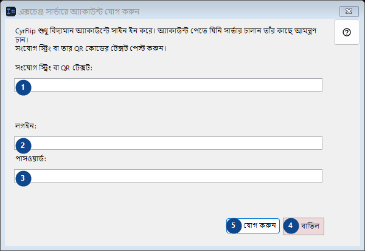
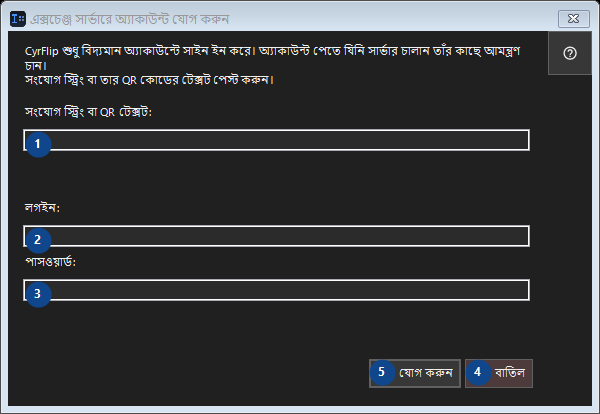

এক্সচেঞ্জ সার্ভারে অ্যাকাউন্ট যোগ করুন
এর কাজ
আপনি যা কপি করেছেন তা নিজের এক্সচেঞ্জ সার্ভারের মাধ্যমে আপনার অন্য ডিভাইসে পাঠিয়ে দিন।


ব্যবহারের ক্রম
নম্বর দেওয়া ব্যাখ্যাগুলি পড়ুন, প্রয়োজনীয় মান বেছে নিন এবং উইন্ডোর নির্দেশ দিয়ে এগিয়ে যান।
উপাদান
1. CyrFlip শুধু বিদ্যমান অ্যাকাউন্টে সাইন ইন করে। অ্যাকাউন্ট পেতে যিনি সার্ভার চালান তাঁর কাছে আমন্ত্রণ চান। সংযোগ স্ট্রিং বা তার QR কোডের টেক্সট পেস্ট করুন।
পাশের লেবেল অনুযায়ী মান বাছুন বা লিখুন। এগোনোর আগে পরীক্ষা করুন।
আপনার শর্টকাট2. CyrFlip শুধু বিদ্যমান অ্যাকাউন্টে সাইন ইন করে। অ্যাকাউন্ট পেতে যিনি সার্ভার চালান তাঁর কাছে আমন্ত্রণ চান। সংযোগ স্ট্রিং বা তার QR কোডের টেক্সট পেস্ট করুন।
পাশের লেবেল অনুযায়ী মান বাছুন বা লিখুন। এগোনোর আগে পরীক্ষা করুন।
আপনার শর্টকাট3. CyrFlip শুধু বিদ্যমান অ্যাকাউন্টে সাইন ইন করে। অ্যাকাউন্ট পেতে যিনি সার্ভার চালান তাঁর কাছে আমন্ত্রণ চান। সংযোগ স্ট্রিং বা তার QR কোডের টেক্সট পেস্ট করুন।
পাশের লেবেল অনুযায়ী মান বাছুন বা লিখুন। এগোনোর আগে পরীক্ষা করুন।
আপনার শর্টকাট4. বাতিল
উল্লিখিত কাজের জন্য এই নির্দেশ ব্যবহার করুন। মেনে নেওয়ার আগে নিশ্চিতকরণ পড়ুন।
আপনার শর্টকাট5. যোগ করুন
উল্লিখিত কাজের জন্য এই নির্দেশ ব্যবহার করুন। মেনে নেওয়ার আগে নিশ্চিতকরণ পড়ুন।
আপনার শর্টকাট